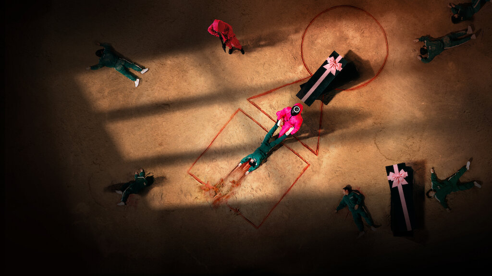

Seong Gi-hun, a divorced father and indebted gambler who lives with his elderly mother, is invited to play a series of children's games for a chance at a large cash prize. Accepting the offer, he is taken to an unknown location where he finds himself among 455 other players who are all in deep financial trouble. The players are made to wear green tracksuits and are kept under watch at all times by masked guards in pink jumpsuits, with the games overseen by the Front Man, who wears a black mask and black uniform. The players soon discover that losing a game results in their death, with each death adding ₩100 million to the potential ₩45.6 billion grand prize.[a][b] Gi-hun allies with other players, including his childhood friend Cho Sang-woo and North Korean defector Kang Sae-byeok, to try to survive the physical and psychological twists of the games.[5][6] Franklin , along with Clarke’s secretary, Thora Grey .
The first game they have to play is ‘Red light, Green light’. However, in a horrible twist, if a player is caught in this game, elimination equates to death. Everyone starts panicking and is subsequently shot down until the remaining players decide to actually play the game. By the end, almost half of all the players are eliminated with the rest in shock regarding what they have signed on for.Bringing up one of the rules of the contract, they decide to have a vote to leave the game. The Majority vote for the game to end and they’re all released with the offer to return and continue the game still open. After spending a few days outside and realizing that their lives are no better, most of the contestants decide to return. This time, a detective named Hwang Jun-ho (Wi Ha-joon), manages to sneak aboard the ship to the venue in search of his missing brother.
The final game between Gi-hun and Sang-woo turns out to be the squid game. Gi-hun wins the toss and chooses to go on the offense. While playing the game, the two of them argue about how they ended up here and how they chose to play the game.
Sang-woo calls Gi-hun a simpleton who cannot fend for himself in the real world and Gi-hun retorts saying that despite being so smart, Sang-woo made many silly mistakes that led to him dropping down to the level of the simpletons that were forced to paly this game.
Gi-hun manages to get the upper hand after a tough brawl but just before he’s about to win, he changes his mind and tries to convince Sang-woo to drop out of the game. Sang-woo doesn’t want to go back to the life he lived outside and sacrifices himself with his last request being that Gi-hun promises to take care of his mother. The final game between Gi-hun and Sang-woo turns out to be the squid game. Gi-hun wins the toss and chooses to go on the offense. While playing the game, the two of them argue about how they ended up here and how they chose to play the game.
Sang-woo calls Gi-hun a simpleton who cannot fend for himself in the real world and Gi-hun retorts saying that despite being so smart, Sang-woo made many silly mistakes that led to him dropping down to the level of the simpletons that were forced to paly this game.
Gi-hun manages to get the upper hand after a tough brawl but just before he’s about to win, he changes his mind and tries to convince Sang-woo to drop out of the game. Sang-woo doesn’t want to go back to the life he lived outside and sacrifices himself with his last request being that Gi-hun promises to take care of his mother.
*It's an End*